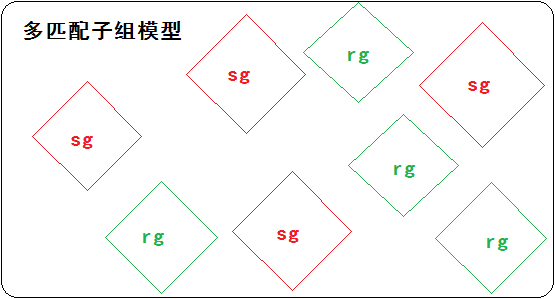

0. 概述
1) “人际推荐”（People-to-peoplerecommendation）以提高人际间积极交流的可能性为目的，旨在提出合适的人际匹配。
2) 不同于“物-人”推荐，人与人双方的喜好都应该被考虑到。
3) 前人的研究是使用“匹配子组法则”（CompatibleSubgroup Rules，CSR）来为用户的每一个喜好属性提供最合适的值，然后用这些值来共同计算出推荐结果。
4) 作者在这篇论文中解决的问题：
a. 考虑了多个属性之间的关联关系，从多个属性整体上来评估推荐；
b. 考虑了用户的个人行为对推荐的影响。
这个解决方案作者称之为多匹配子组（Multiple Compatible Subgroups）。
作者使用这个方案来得出更合适的推荐。
1. 介绍
1) “人际交流”模型： sender发送信息给receiver，receiver发回一个积极回复给sender，两者的成功交流依赖于“相互吸引”（reciprocal interests）。
2) “人际推荐”系统（People-to-peopleRecommendation）：在于提高“人际交流”的成功率，它与“物-人”推荐的区别在于它需要综合考虑sender和receiver的喜好。
3) “子组”：拥有一个或多个相同属性值的用户称为一个“子组”。作者假定（研究前提）：在同一个子组里的用户通常拥有相似的喜好模式。
4) “匹配子组”：在多个子组中，最“相互感兴趣”的两个子组。感兴趣的程度用“匹配值”（compatibility score）来衡量。
5) CSR把那些被划为匹配子组且还没取得交流进展的两个组提取出来，把这两个组的属性值进行“融合”（attribute combination process），以提高交流的成功率。这个办法把top-10推荐的成功率提高到了26%，top-100成功率达到23%。（而无推荐交流的成功率只有15%）
6) CSR也有它的不足：
a. 由于CSR对每个子组只推荐一个匹配子组，这样他就忽略了一个问题——一个属性中多个不同取值可能会产生相似的效果（即“匹配值”），这样就可能会有很多其它的匹配子组被忽略了。
b. CSR只使用sender的喜好来衡量“匹配值”，缺少了其它的衡量标准。
c. CSR只使用年龄和住址两种匹配值来对子组进行排序，缺少了对个体行为的考虑。
7) 针对CSR的不足，作者在这篇文章中提出了几种改进型方案（severalextended CSR methods），改进方案有以下特征：
a. 一个属性包含多个取值，一个子组有多个匹配子组，对应的匹配值也有多个值。
b. 考虑了匹配子组成员的个体行为对推荐排序的贡献。
8) 作者对改进型CSR进行了测试：
测试数据：来自一个商业在线交友网站的历史数据。
测试结果：相比于单属性值CSR，最好的一个改进型CSR显著地提升了成功交流的可能性。
2. 相关工作
1) 在作者看来，推荐系统可分为“物-人推荐”和“人-人推荐”。前者从互联网出现以来就一直存在研究，后者是随着社交网络而兴起的。
2) “人-人推荐”可分为基于行为推荐、基于属性推荐和混合形式推荐。
3) 基于行为推荐：收集用户交互数据，诸如用户间的对话、评论、关系等等。通常这里会用到协同过滤算法来根据这些数据进行相似用户或备选用户的的推荐。
4) 基于属性推荐：通过用户提供的资料。
5) 混合形式推荐：既收集用户交互数据，又根据用户提供的资料。
6) 作者之前的工作：
a. 建立了一个基于属性推荐系统，来为一个子组推荐一个匹配子组；
b. 建立了一个混合了属性（基于属性）和协同过滤（基于行为）两种途径的推荐系)统。
7) 作者在这篇论文里的研究：
拓展之前的基于属性推荐系统。（但这个系统可以很简单地与协同过滤算法结合）
3. 推荐方法
1) 一些定义：
a. Def1：用户u
u={u1,…,un}。ui代表用户属性i的值。属性值可以随时更新，但每个属性只能有一个值，这些值直到使用推荐法则时才会被统一为数值形式。
b. Def2：子组subgroup
拥有相同性别，且有一个或一个以上相同属性值。
c. Def3：对话contact
sender发送一则消息给receiver的动作。这意味着sender对receiver感兴趣。
d. Def4：交互interaction
一个contact无论有没有收到receiver的回复，都叫做一个交互。交互有积极和消极之分，回绝的和没有回复的都归为消极。
e. Def5：sender子组（receiver子组）
在一组interaction中的sender归为一个sender子组（sg）。
2) 兴趣度衡量

a. Def6：对目标组的兴趣度
衡量一个sg相比于所有receivers R，与一个rg的对话的比例。反映的是：在所有接收组里，发送组与哪个组对话量最多。
n(sg,rg)：sg发给rg的消息数。
n(sg,R)：sg发给R的消息数。
b. Def7：对目标组的兴趣度比

衡量一个sg对一个rg的兴趣度与所有senders S对于rg的兴趣度的比值。反映的是：相比于所有发送组，某发送组跟某接收组的对话量是不是最多的。
P(sg,rg)：sg对rg的兴趣度。
P(S,rg)：S对rg的兴趣度。
c. Def8：对目标组的成功率
衡量一个sg相比于所有的receivers R，与一个rg的对话的成功率。反映的是：在目标接收组里，发送组收到的积极回复数占多少，即对话成功率。
n(sg,rg,+)：sg发给rg且得到rg积极回复的消息数。
n(sg,rg)：sg发给rg的消息数。
d. Def9：对目标组的成功率比

衡量一个sg对一个rg的成功率与所有senders S对rg的成功率的比值。反映的是：相比于所有发送组，某发送组跟某接收组的对话成功率是不是最高的。
P(sg,rg,+)：sg对rg的成功率。
P(S,rg,+)：S对rg的成功率。
3) 匹配度
匹配度的定义：一个sender子组与一个receiver相互感兴趣的程度。
Def10：匹配度
衡量一个sg与一个rg之间相互感兴趣的程度。
Isg,rg：sg对rg的感兴趣程度。
Irg,sg：rg对sg的感兴趣程度。
4. （启发式）学习化的匹配子组法则
a. 单匹配子组法则一般形式：
即：如果属性 的值为 且…且 的值为 ，那么，就可以推荐属性 的值为 且…且 的值为 的用户。
b. 多匹配子组法则的一般形式：
不同于单匹配子组法则，这里的 代表某个属性i的一系列相似的取值，只要取值落在 里就可以被推荐。
c. 工作机制：刚开始每个用户会有多个空白的规则 ~ （n对应属性个数）（没有条件和结果）。每个属性a在用户之间的交流中都会起到推波助澜的作用，在计算P(sg,rg,+)后，会产生一个成功率最大的匹配子组，这时每个属性值u就都有了一个对应的匹配值范围V。最后， = 会被作为条件， ∈V会被作为结果，二者结合成一个规则 。
d. 后话1：匹配值范围V是怎么确定的：一个将要加入V的值vi都会跟u一起计算出匹配值（即Def10），所有vi的匹配值标准差至少要达到0.5才能加入V。
e. 后话2：最终的推荐表怎么产生：作者的规则是：被系统推荐的用户前提是在28天内登陆过的，推荐的排名规则是拥有越多的匹配属性的用户排名越靠前。如果遇到相同的排名，则看哪个用户被回复次数多一点。
5. 设计实验
1) 实验数据来源：一个商业在线交友网站在2010年3月1日的交流数据和用户资料。交流数据包括交流时间、发送信息类型和回复信息类型；用户资料包括年龄、地址、婚姻、家庭组成等用户基本信息。
2) 数据分类：
a. 供算法学习的数据：包括交流数据和用户资料。
b. 活跃用户数据：包括活跃用户28天内的交流数据和他们的用户资料。这些数据用来产生候选推荐者。大约有137000份。
c. 测试数据：包括2010年3月的前三个星期的活跃用户的交流数据。大约有130000份，这其中有65万次交流，15%是积极交流。
3) 两个参数：
a. 精确度Precision：
R代表推荐的交流数；
T代表测试数据中的交流数；
T+代表测试数据中积极回复的数目。
b. 召回率Recall：
Recall代表了在测试数据中积极回复的数目占top-N推荐数目的比重。通俗来讲，就是用户有多认可系统的推荐，也就是推荐被采纳的程度。
c. 两个参数必须结合起来，来评估算法，缺少一个都会导致评估不准确。
6. 实验结果
1) Precision和Recall参数值（带有基于用户活跃度候选排名的因素在里边(3.4.e有提到过)）：
从图中可以看出：
a. 多匹配子组法则的效果明显比单匹配子组法则效果好；
b. 随着N变小，top-N的Precision值呈增长趋势，Recall呈衰减趋势。
2) Precision和Recall参数值（不带基于用户活跃度候选排名的因素）：
这个实验结果排除了3.4.e提到过的“选择28天内活跃过的用户作为候选用户”的因素，来证明“多匹配相对于单匹配的提高”不是因为这个因素（而是本文要论证的多匹配法则这个因素）导致的。
由于没有刻意去选择活跃度高的用户，所以 Precision参数会比较低，但不影响大局结果。
7. 总结
这篇论文提出了多匹配子组法则，把单匹配子组法则中的单一匹配值变成一个匹配范围，同时加入了一些算法上和参数上的限制条件，总体提高了推荐成功率和认可度。
① 把用户根据性别和其它属性，相同的值归为一个组。
② 取一个组，当做接收组，其它所有组当做发送组，看哪个发送组给接收组发得最多、积极回复的最多。
③ 匹配这两个组或多个组，用Def10算出两两用户的匹配值。
④ 重复第2和3步，每次只能有一个接收组，或只能有一个发送组。得出每个用户与其它用户的匹配值。
⑤ 最终根据匹配值来排名。